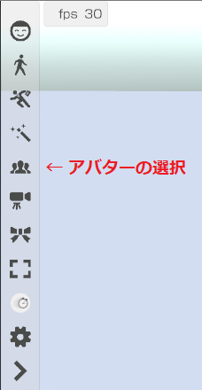
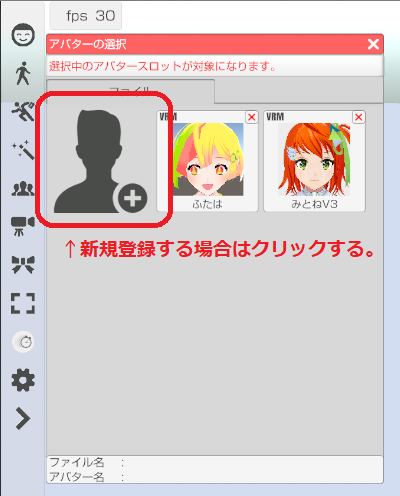
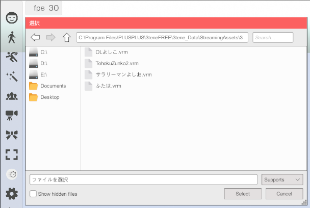
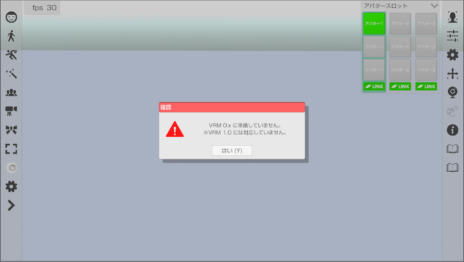
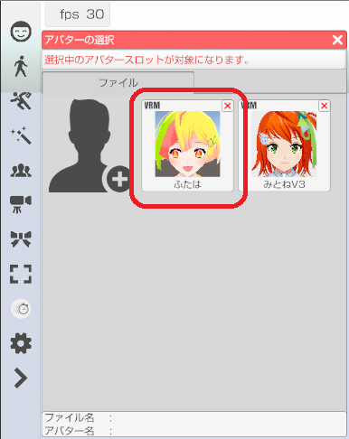
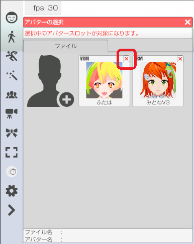

アバターを読み込みます。
１度読み込んだアバターは一覧に登録されます。
左側メニューの「アバター選択」のアイコンをクリックします。

既に登録済みのアバターを使用する場合はそのアバターをクリックします。
新規にアバター登録する場合は一覧の左上のアイコンをクリックします。

VRM ファイルを選択する
読み込みたい VRM もしくは Live2D(json) を選択します。
一覧から VRM を選択するとアバターとして読み込まれます。

3tene V4 は VRM 1.0 に対応していませんので読み込みに失敗します。

登録済みのアバターは一覧に表示されるのでアイコンをクリックすると
アバターとして読み込まれます。

削除したいアバターアイコンの右上にある「×」をクリックすると
確認のダイアログが表示されるので「はい」を選択すると削除されます。
